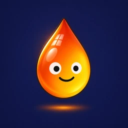
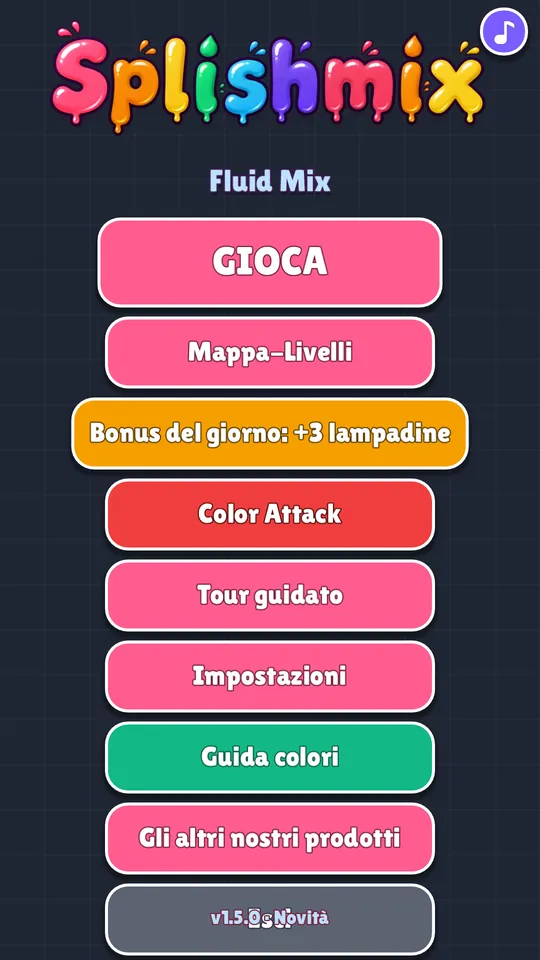
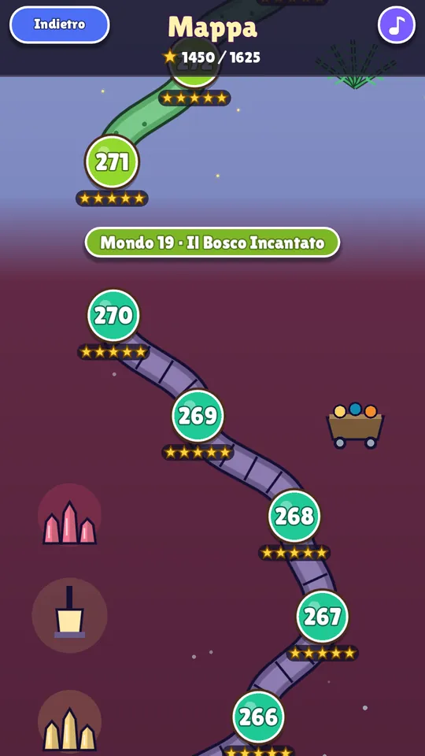
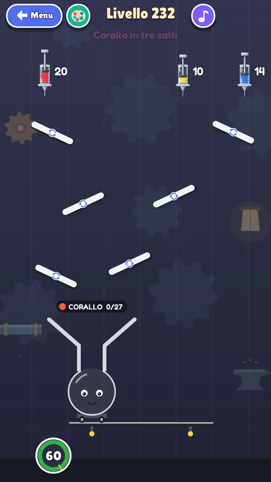
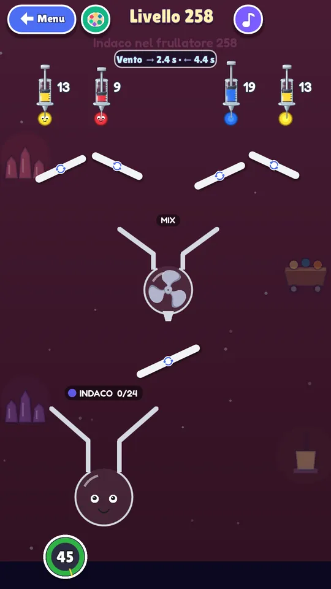
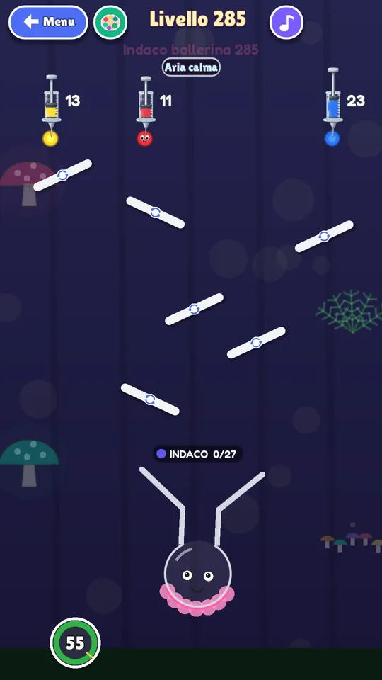
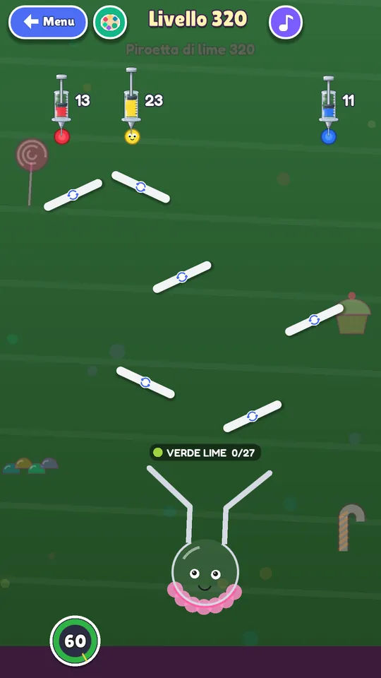

Evolved!Splishmix
Su Google PlayOn Google PlayMescola, goccia dopo goccia.Mix it, drop by drop.
Puzzle di fluidi e coloriFluid & colour puzzle
Il rosso incontra il giallo e nasce l'arancione. Un livello alla volta scopri nuove tinte, e «ancora uno» arriva prima di accorgertene.Red meets yellow and orange is born. Level after level you uncover new shades, and «just one more» comes before you know it.
Un puzzle di fluidi e colori con le simpatiche Drop-Pals. Mescola i colori primari, scopri le nuove tinte e supera i livelli con calma, senza fretta.A fluid and colour puzzle with the cheerful Drop-Pals. Mix the primary colours, discover new shades and clear levels at your own pace.
Pensato per giocare in pochi minuti, dovunque ti trovi.Made to be played in a few minutes, wherever you are.
Evolved: le novitàEvolved: what's new
Color AttackColor Attack
Una modalità estrema: circuiti di 5 prove dai livelli più difficili, con poche gocce, scivoli arrugginiti e tempo ridotto. Niente vite, sfida del giorno e codici da condividere.An extreme mode: 5-trial circuits from the hardest levels, with few drops, rusty chutes and less time. No lives, a daily challenge and codes to share.
Il ventoThe wind
Dal livello 31 una folata può spostare le gocce mentre cadono. Un avviso ti anticipa l'arrivo: se il colore non viene perfetto, riprova.From level 31 a gust can push the drops while they fall. A warning shows up first: if the colour is not perfect, try again.
Tutte le siringhe con il dosatoreEvery syringe has a dosing dial
Da quando compare il dosatore ce l'hanno tutte: per indovinare la ricetta devi ragionare sui colori, non seguire gli indizi.Once the dosing dial appears every syringe has it: to find the recipe you have to think about the colours, not follow hints.
150 nuovi livelli150 new levels
Dal 76 al 225, in 10 nuovi mondi.From 76 to 225, across 10 new worlds.
100 nuovi livelli100 new levels
Dal 226 al 325, in 7 nuovi mondi.From 226 to 325, across 7 new worlds.
Capisci subito perché hai sbagliatoSee right away what went wrong
Dopo ogni tentativo ti viene spiegato l'esito, per esempio «Troppo rosso». «Riprova» conserva dosi e scivoli, così correggi senza ricominciare.After every attempt the result is explained, for example “Too much red”. “Retry” keeps your doses and chutes, so you can fix it without starting over.
Lampadina a tre indiziThree-step hint bulb
Un aiuto graduale: il primo indizio è gratis.A gradual hint: the first one is free.
Il vento si annunciaThe wind gives a warning
Anche nei livelli normali l'arrivo del vento è segnalato prima del VIA.In regular levels too, the wind is announced before you press GO.
Guardalo in azioneSee it in action
Dentro il giocoInside the game






In breveAt a glance
Colori che si mescolanoColours that blend
Rosso, giallo e blu danno vita a nuove tinte.Red, yellow and blue create new shades.
Drop-PalsDrop-Pals
Piccole gocce con un carattere tutto loro.Little drops with a personality of their own.